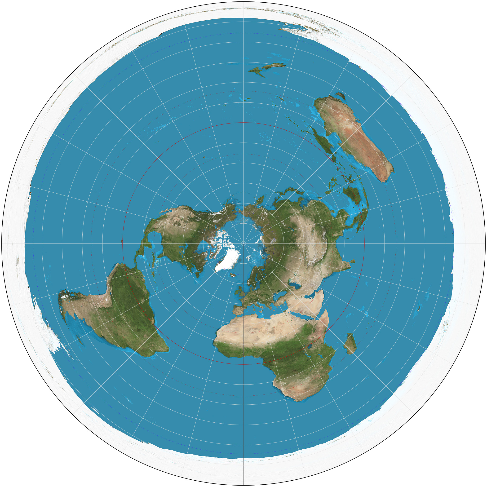
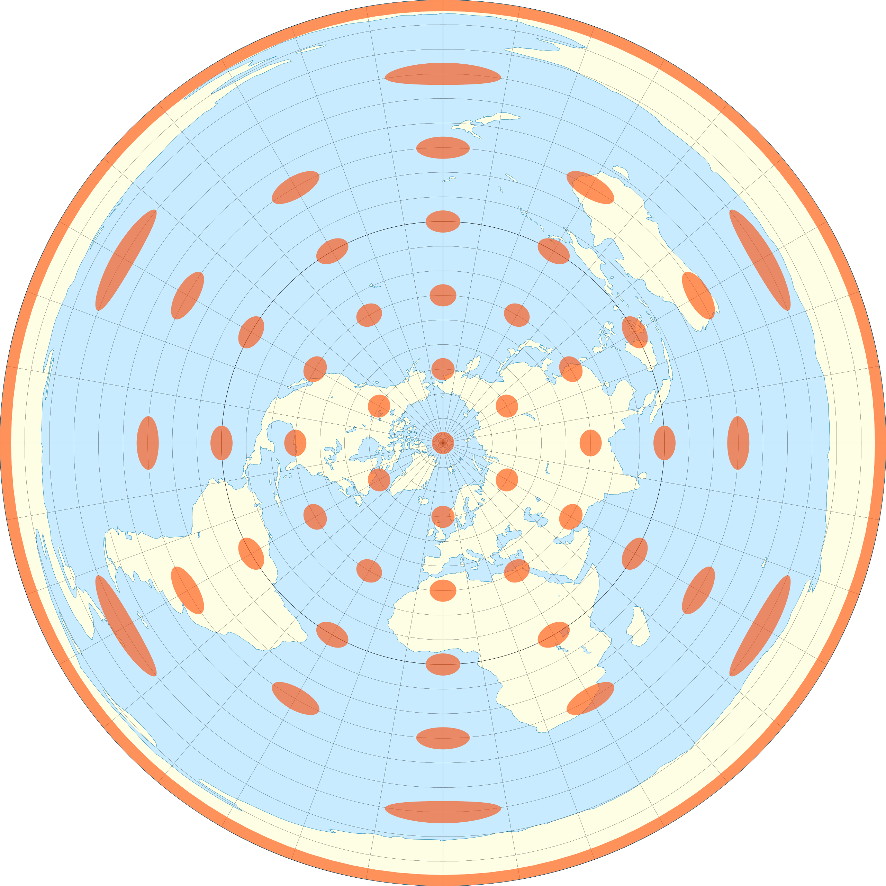
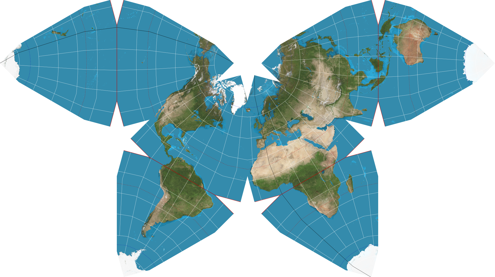

<!doctype html>
<html>
  <head>
<meta charset="utf-8">
<meta name="viewport" content="width=device-width, initial-scale=1.0, maximum-scale=1.0, user-scalable=no">

<title>Lecture 7</title>

<link rel="stylesheet" href="https://cdnjs.cloudflare.com/ajax/libs/reveal.js/3.6.0/css/reveal.css">
<link rel="stylesheet" href="https://cdnjs.cloudflare.com/ajax/libs/reveal.js/3.6.0/css/theme/white.min.css">
<link rel="stylesheet" href="https://maxcdn.bootstrapcdn.com/font-awesome/4.5.0/css/font-awesome.min.css">

<!-- Theme used for syntax highlighting of code -->
<link rel="stylesheet" href="https://cdnjs.cloudflare.com/ajax/libs/highlight.js/9.12.0/styles/github.min.css">
<link href="https://fonts.googleapis.com/css?family=Questrial" rel="stylesheet">

<!-- Printing and PDF exports -->
<script>
    var link = document.createElement( 'link' );
    link.rel = 'stylesheet';
    link.type = 'text/css';
    link.href = window.location.search.match( /print-pdf/gi ) ?  '/revealjs/css/print/pdf.css' : '/revealjs/css/print/paper.css';
    document.getElementsByTagName( 'head' )[0].appendChild( link );
</script>
<script src="https://cdnjs.cloudflare.com/ajax/libs/reveal.js/3.6.0/lib/js/head.min.js"></script>
<script src="https://cdnjs.cloudflare.com/ajax/libs/reveal.js/3.6.0/js/reveal.min.js"></script>


<style type="text/css">
.reveal section.present {
  text-align: left;
}
.centered {
  text-align: center;
}
.reveal {
  font-size: 30px;
  font-family: 'Questrial', sans-serif;
}
.reveal section img {
  box-shadow: none;
  border: 0px;
  display: block;
  margin-left: auto;
  margin-right: auto;
}
.reveal bigtext {
  font-size: 800%;
}

.reveal h1, .reveal h2, .reveal h3 {
  text-transform: none;
}

.reveal .titleslide h1 {
  text-align: center;
}
.reveal .titleslide h2 {
  text-align: right;
}

.vertical_center section {
  vertical-align: middle;
}

.left_abs {
  left:0%;
  text-align: left;
  float: left;
  width:50%;
  z-index:-10;
}

.left {
  left:-8.33%;
  text-align: left;
  float: left;
  width:50%;
  z-index:-10;
}

.right {
  left:31.25%;
  top: 75px;
  float: right;
  text-align: right;
  z-index:-10;
  width:50%;
}

.reveal table td {
  text-align: left;
  padding: 0.2em 0.5em 0.2em 0.5em;
  border: solid; 
}

.reveal table tbody tr:last-child th,
.reveal table tbody tr:last-child td {
  border-bottom: solid; }

.reveal .table-hl {
  background: #aaa;
}


</style>
  </head>

  <body>
    <div class="reveal">
      <div class="slides">
        <section data-markdown
           data-separator="^\n---\n"
           data-separator-vertical="^\n----\n"
           data-separator-notes="notes?:"
           >
          <script type="text/template">
<!-- .slide: class="titleslide" -->

# Intro to Programming & Data Viz

<div style="height: 6.0em;"></div>

## Jill P. Naiman
## Summer 2020
## Lecture 7

---

## Last time

 * Colors - what are they really?
 * Color mapping - mapping data to colors
 * Visual Encoding in general
 
notes:
last time we talked a bit about how to encode color & encoding data in general

---

## This time

 * Maps & their projections
 * Mappable data with geopandas & GeoJSON
 * Beginning interactivity with ipywidgets
 
notes:
this time we'll do a very brief intro into mapable data & interactivity with ipywidgets

we'll end by combining them to make interactive maps!

---

<br>
<br>
<br>

# Topic #1: Maps & their projections

---

## Maps

Thinking about map projections is important for GIS data, and generic global info viz.

Let's start by thinking about the fact that...

---

## Maps

Thinking about map projections is important for GIS data, and generic global info viz.

Let's start by thinking about the fact that...

The Earth is a sphere.

(Fun question: to what degree is it a sphere?)

Have you ever wrapped a piece of paper around a ball?

---

## Projections

To map from one system to another, we must "project" from the original sphere
to the flat object we are observing.

What are some things we could preserve during such a projection?


notes:
One common conversion from sphere to plane is the squashed cylinder approach

This can be used to conserve straight lines (distances)


---

## Projections


notes:
There's always a weird way to do it too. Here we're exploding the sphere into lots of 
mostly planar pieces that we can just lie out side-by-side.

This may preserve shape well, but it will be hard to use to navigate!

---

## Projections: Common Preservations

Typically, one or more of these will be preserved, or at least, the distortion
will be minimized:

 * Area
 * Shape (Conformal)
 * Distance

---

## Projections: Common Preservations

Typically, one or more of these will be preserved, or at least, the distortion
will be minimized:

 * Area
 * Shape (Conformal)
 * Distance

There are other properties that can be preserved, as well.  Typically, maps
will be a "compromise" between preserving different properties.

What happens when we preserve one property over another?

---

Mercator is a "conformal" projection.  What is wrong with this?

<!-- .slide: data-background-image="images/mercator.png" data-background-size="auto 80%" -->

notes:
conformal = shape preserving (at the expense of accurate size)

---

## Projections: Distortions

We can characterize distortions in a projection by examining how a known shape
appears on them.  The Tissot Ellipse of Distortion is a method of showing this
by drawing circles of a fixed radius and examining their elliptical distortion.


notes: so here for example, we see that the mercator projection has circles that
stay circles, though they change in relative size depending on where they are on the map

---

What do you notice?

<!-- .slide: data-background-image="images/mercator.png" data-background-size="auto 80%" -->

---

<!-- .slide: data-background-image="images/mercator_tissot.png" data-background-size="auto 80%" -->

notes:
Greenland and Antarctica are HUGE

---

<!-- .slide: data-background-image="images/transversemercator.png" data-background-size="auto 95%" -->

---

<!-- .slide: data-background-image="images/transversemercator_tissot.png" data-background-size="auto 95%" -->

notes:
this projection is most accurate near the vertical center line

---

<!-- .slide: data-background-image="images/lambertcylindrical.png" data-background-size="auto 95%" -->

---

<!-- .slide: data-background-image="images/lambertcylindrical_tissot.png" data-background-size="auto 95%" -->

notes:
Also known as "equirectangular", this is the favorite format of NASA because it's mathematically straightforward.

Note that the very top line of the image represents a single point on the globe.

---

<!-- .slide: data-background-image="images/mollweide.png" data-background-size="auto 95%" -->

---

<!-- .slide: data-background-image="images/mollweide_tissot.png" data-background-size="auto 95%" -->

notes:
this is considered a good compromise between shape-preserving and angle preserving - but it's not perfect at either.

---

<!-- .slide: data-background-image="images/sinusoidal.png" data-background-size="auto 95%" -->

---

<!-- .slide: data-background-image="images/sinusoidal_tissot.png" data-background-size="auto 95%" -->

notes:
this has even less distortion than mollweide, but the pointy ends don't feel very elegant and planet-like

---

<!-- .slide: data-background-image="images/gnomonic.png" data-background-size="auto 95%" -->

---

<!-- .slide: data-background-image="images/gnomonic_tissot.png" data-background-size="auto 95%" -->

notes:
this is another nightmare scenario like Mercator that was initially created for navigation. Straight lines on this map are the shortest route, but area, shape, and size are distorted.

---

## Discussion

What happens when we make a map that minimizes one region and maximizes
another?

---

## Discussion

<iframe width="1024" height="576" src="https://www.youtube.com/embed/vVX-PrBRtTY?rel=0" frameborder="0" allow="accelerometer; autoplay; encrypted-media; gyroscope; picture-in-picture" allowfullscreen></iframe>

notes:
after watching this, it's useful to know that the Peters projection is actually flawed as a teaching tool because of how much it distorts the shapes of countries near the poles.

---

## Discussion

[The True Size Of...](https://thetruesize.com)

notes:
Let's go see what Greenland actually looks like -- this was part of the intro, but I'll point it out again so you can really see it!

---

## Discussion

Why is Europe at the center of all the maps we've looked at?

---

## Discussion



notes: there is nothing specifically wrong with putting a pole at the center of the map

---

## Discussion



notes: also see here that now the equator is very distorted

---
## Discussion



notes: or why bother having a spherical or rectangular shape at all?

---

## Discussion


notes: look how here there is very little distortion of size or shape

---

## Maps: Coordinate Systems

Once we have our system of transformation, we need to have a method of
representing positions.

Three common baseline methods:

 * Spherical coordinates
 * Latitude and Longitude
 * Degrees, minutes, seconds

Take care with:

 * Zero points
 * North/South, East/West
 * Ranges

---

<br>
<br>
<br>

# Topic #2: Formatting for shape data

---

## JSON & GeoJSON


notes:
this will be a SUPER quick intro and we'll get a lot of practice in Python in a few moments.

json is meant to be a way to store data that is "query" based - i.e. it lends itself to searches well

for this reason, it shows up in web development a lot

---

## GeoJSON


notes:
geojson is just a special json formatting for geographical data

it will specify the "shape" of the data file but also things like its default coordinate reference system which tells you something about the "center" and "stretch" of whatever it lists in its coordinates

---

## GeoJSON

<div class="left" markdown=1>

GeoJSON is:
<ul>
<li> data format for encoding geographic data structures</li>
<li> uses "geometries", "features" and "collections of features"</li>
<li> seven Geometry types/objects</li>
  <ol>
   <li> Point </li>
   <li> LineString </li>
   <li> Polygon </li>
   <li> MultiPoint</li>
   <li> MultiLineString</li>
   <li>MultiPolygon</li>
   <li> GeometryCollection</li>
  </ol>
</ul>

</div>

<div class="right" markdown=1>


</div>


notes:
cite: https://image.slidesharecdn.com/geojson-170417122110/95/geojson-1-638.jpg?cb=1492431924

We will see a lot of Polygons & MultiPolygons.

---

## GeoJSON

Tips for dealing with GeoJSON:
 * use `.keys()` and progressively drill down to data of interest
 * look for location of `properties` and `features`

We won't do much of this in class, but keep it in mind if you encounter JSON/GeoJSON files in your "real life".

notes:
often our issue will be linking the information stored in JSON file formats with that of whatever plotting routine we are using


---

<br>
<br>
<br>

# Topic #3: Mappable data & Viz Engines


---

## Geopandas


notes:
the calls for geopandas is going to look very similar to pandas calls!

---

## Geopandas

```python
gdf = geopandas.read_file('mapfile.geojson')
gdf.head()
gdf.plot()
```

---

## Geopandas

```python
gdf = geopandas.read_file('mapfile.geojson')
gdf.head()
gdf.plot()
```

Map information sources:
 * [https://datagateway.nrcs.usda.gov/](https://datagateway.nrcs.usda.gov/)
 * [US Census info](https://www.census.gov/geographies/mapping-files/time-series/geo/tiger-line-file.html)
 * [City of Champaign](https://gis-cityofchampaign.opendata.arcgis.com/)

---

## Other Map Viz

 * ipyleaflet
 * CartoPy
 * Google Maps & Earth
 * WorldWide Telescope
 * CesiumJS
 * bqplot
 * Vega & friends

---

# To Python for maps and maps+widgets!

notes:
today we'll play around with maps a bit and use some intro to ipywidgets to make these maps interactive in Python!

          </script>
        </section>
      </div>
    </div>
<script>
    // More info about config & dependencies:
    // - https://github.com/hakimel/reveal.js#configuration
    // - https://github.com/hakimel/reveal.js#dependencies
    Reveal.initialize({
        dependencies: [
            { src: 'https://cdnjs.cloudflare.com/ajax/libs/reveal.js/3.6.0/plugin/markdown/marked.js' },
            { src: 'https://cdnjs.cloudflare.com/ajax/libs/reveal.js/3.6.0/plugin/markdown/markdown.min.js' },
            { src: 'https://cdnjs.cloudflare.com/ajax/libs/reveal.js/3.6.0/plugin/notes/notes.min.js', async: true },
            { src: 'https://cdnjs.cloudflare.com/ajax/libs/reveal.js/3.6.0/plugin/highlight/highlight.min.js', async: true, callback: function() { hljs.initHighlightingOnLoad(); } },
            { src: '/reveal.js-plugins/chalkboard/chalkboard.js' },
            { src: 'https://cdnjs.cloudflare.com/ajax/libs/reveal.js/3.6.0/plugin/math/math.min.js', async: true }
        ],
		keyboard: {
			67: function() { RevealChalkboard.toggleNotesCanvas() },	// toggle notes canvas when 'c' is pressed
			66: function() { RevealChalkboard.toggleChalkboard() },	// toggle chalkboard when 'b' is pressed
			46: function() { RevealChalkboard.clear() },	// clear chalkboard when 'DEL' is pressed
			 8: function() { RevealChalkboard.reset() },	// reset chalkboard data on current slide when 'BACKSPACE' is pressed
			68: function() { RevealChalkboard.download() },	// downlad recorded chalkboard drawing when 'd' is pressed
		},
        center: false,
        transition: 'none',
        backgroundTransition: 'none',
        showNotes: true,
        progress: false,
	slideNumber: true,

    });
</script>
  </body>
</html>

